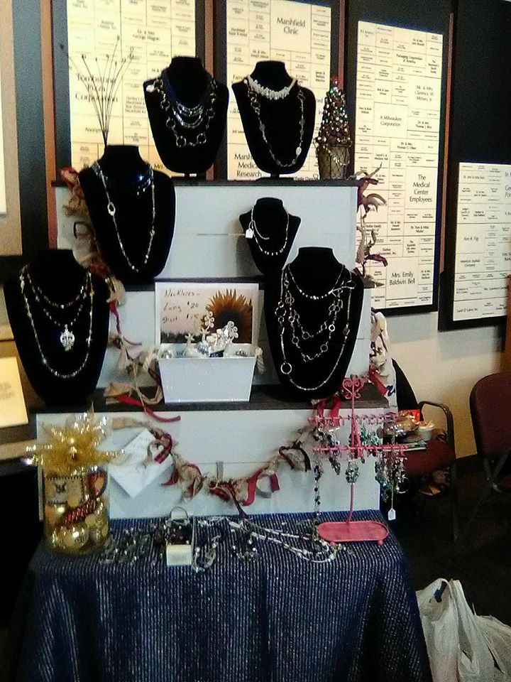

About Us

Hartstrings Creations is a small handmade crafts business based out of Central Wisconsin.
We make a variety of crafts including necklaces, rings, bracelets, scarves, bootcuffs, and other crocheted items.
Everything is made by hand and straight from the heart.
You can find us at small craft shows around central Wisconsin near the holidays, and keep up with our events on our Facebook page.
Almost everything on our site also has the option to be custom ordered.
(Customizations mostly refer to colors. Some items such as the flower bracelets only come in certain colors, feel free to inquire on our contact page!)